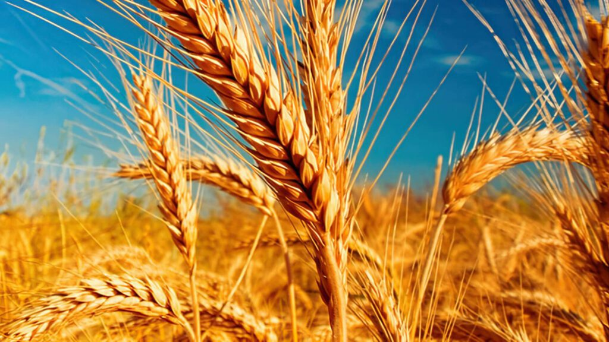
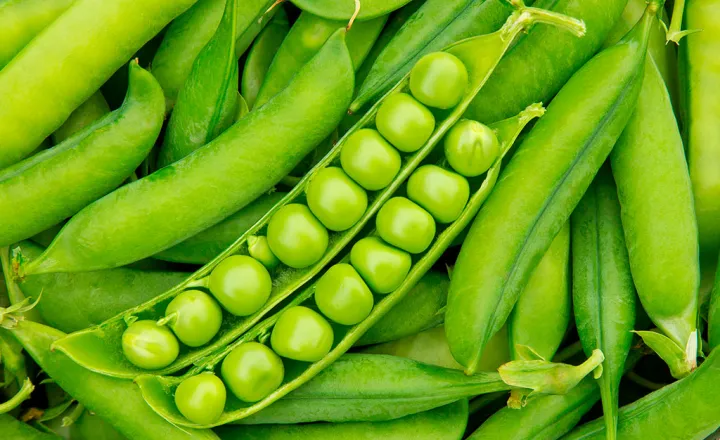

CEREAIS
Como trigo, milho, arroz e cevada. São a base da alimentação humana e animal, ricos em carboidratos e fundamentais na dieta mundial.
LEGUMINOSAS
Como feijão, soja, lentilha e ervilha. Importantes fontes de proteínas vegetais, também ajudam a fixar nitrogênio no solo, melhorando sua fertilidade.
HORTALIÇAS